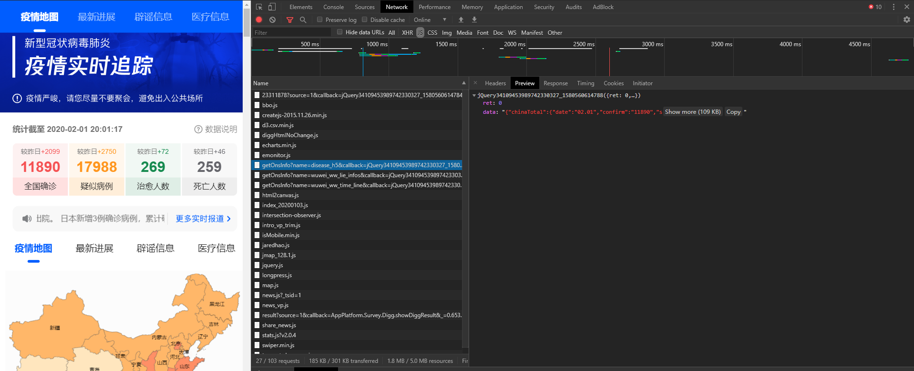
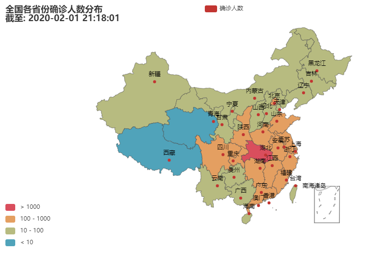

爬取2019-nCoV新型冠状病毒肺炎各省份确诊人数分布数据并制作数据可视化地图
数据的获取
在学习该博客的数据爬取时发现数据似乎已经不再更新，所以重新在腾讯新闻网站搜索相关数据。

使用time、json和requests获取数据。
import time, json, requests
url = 'https://view.inews.qq.com/g2/getOnsInfo?name=disease_h5&callback=&_=%d'%int(time.time()*1000)
data = json.loads(requests.get(url=url).json()['data'])
print(data)
可以看到数据如下所示（省略部分内容）：
{'chinaTotal': {'date': '02.01', 'confirm': '11890', 'suspect': '17988', 'dead': '259', 'heal': '269'}, 'lastUpdateTime': '2020-02-01 21:18:01', 'areaTree': [{'name': '中国', 'children': [{'name': '湖北', 'children': [...], 'total': {'confirm': 7153, 'suspect': 0, 'dead': 249, 'heal': 166}, 'today': {'confirm': 1347, 'suspect': -49, 'dead': 49, 'heal': 15}}, {'name': '浙江', 'children': [...], 'total': {'confirm': 599, 'suspect': 0, 'dead': 0, 'heal': 20}, 'today': {'confirm': 62, 'suspect': 0, 'dead': 0, 'heal': 7}}, ...
我们只获取各个省份确诊人数的信息已经最后更新的时间。
def catch_distribution():
areaData = {}
url = 'https://view.inews.qq.com/g2/getOnsInfo?name=disease_h5&callback=&_=%d'%int(time.time()*1000)
data = json.loads(requests.get(url=url).json()['data'])
# print(data)
# 获取更新时间
lastUpdateTime = data['lastUpdateTime']
# 找到中国信息
for item in data['areaTree']:
if item['name'] == '中国':
chinaData = item['children']
break
# 获取各个省份确诊的人数
for item in chinaData:
areaData[item['name']] = item['total']['confirm']
return areaData, lastUpdateTime
数据可视化
这里使用的是pyecharts v1，似乎腾讯新闻也是用的这个包。由于湖北人数远高于其他省份，使用连续型的视觉映射效果不好，这里采用了分段式的，可以以10的整数幂为界限传入pieces，time参数即之前得到的最近更新时间。
def map_visualmap(time, pieces) -> Map:
c = (
Map()
.add("确诊人数", data.items(), "china")
.set_global_opts(
title_opts=opts.TitleOpts(title="全国各省份确诊人数分布\n截至: " + time),
visualmap_opts=opts.VisualMapOpts(max_=5000, is_piecewise=True, pieces=pieces)
)
)
return c
完整代码
import time
import json
import requests
import numpy as np
from pyecharts import options as opts
from pyecharts.charts import Map
def catch_distribution():
areaData = {}
url = 'https://view.inews.qq.com/g2/getOnsInfo?name=disease_h5&callback=&_=%d' % int(
time.time()*1000)
data = json.loads(requests.get(url=url).json()['data'])
# 获取更新时间
lastUpdateTime = data['lastUpdateTime']
# 找到中国信息
for item in data['areaTree']:
if item['name'] == '中国':
chinaData = item['children']
break
# 获取各个省份确诊的人数
for item in chinaData:
areaData[item['name']] = item['total']['confirm']
return areaData, lastUpdateTime
# 官网范例中的链式调用
def map_visualmap(time, pieces, data) -> Map:
c = (
Map()
.add("确诊人数", data.items(), "china")
.set_global_opts(
title_opts=opts.TitleOpts(title="全国各省份确诊人数分布\n截至: " + time),
visualmap_opts=opts.VisualMapOpts(
max_=5000, is_piecewise=True, pieces=pieces)
)
)
return c
data, lastUpdateTime = catch_distribution()
pieces = [
{"min": 1000},
{"min": 100, "max": 1000},
{"min": 10, "max": 100},
{"max": 10}
]
map1 = map_visualmap(lastUpdateTime, pieces, data)
map1.render()
最后的效果如下，

运行后会在根目录下生成render.html
本博客所有文章除特别声明外，均采用 CC BY-SA 3.0协议 。转载请注明出处！